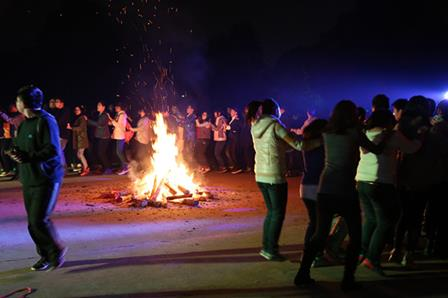
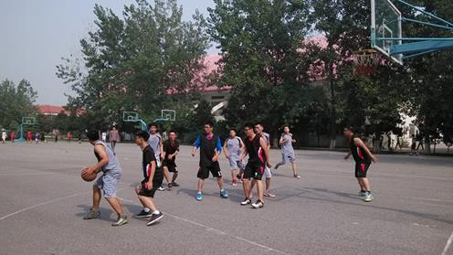
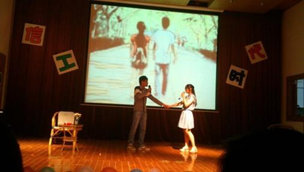
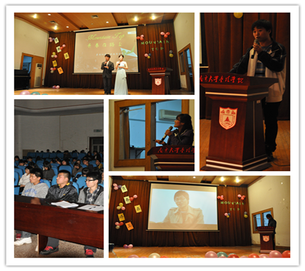
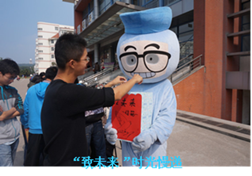
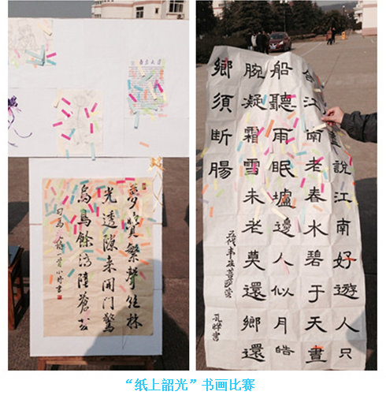
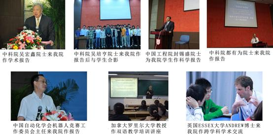
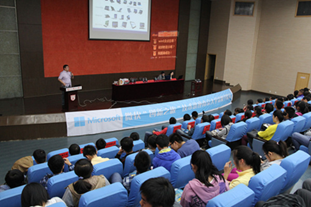
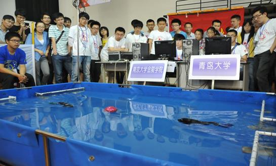

丰富多彩的学生活动
南京大学金陵学院信息科学与工程学院是青春飞扬、昭示个性的场所，无论是院系学生会，还是大大小小的各类文体活动，都可能成为你展现个人风采、发挥锻炼一技之长的舞台。从入校开始，大型迎新篝火晚会、新生风采大赛让你融入大学生活，新生歌手大赛、辩论赛、文化节、科技节、各类运动会和晚会让你尽情展示自我，宿舍文化节、美食文化节让你乐在其中，充分去感受：信工是自己的。
一、丰富多彩的学生活动
信工学院大力开展丰富多彩的学生活动，给学生一片属于自己的天空，让学生充分发挥自己的兴趣爱好和个性特长，从而达到了培养创新实践人才和实现人的全面发展的目的。






二、学术交流活动活跃
学院注重学生培养与国际接轨，定期聘请国际知名大学教授、院士到我院讲学，部分课程采用英文教材，双语教学。通过采取这些举措进一步开阔了学生的视眼，为培养应用型、国际化的高端专业人才奠定了基础。


学院注重学生创新能力培养，重点打造了集软件、电子、机械、通信与一体的多学科融合的机器人竞赛团队，该团队在各年度比赛中，屡创佳绩，立刻众多985、211高校，共获得10余项冠军。

学院通过开展这一系列活动，不仅激发了学生们的梦想与激情，而且再次彰显了学院的人文与科技气息，强力促进了学院良好学风的建设，促进了学校校园文化建设。